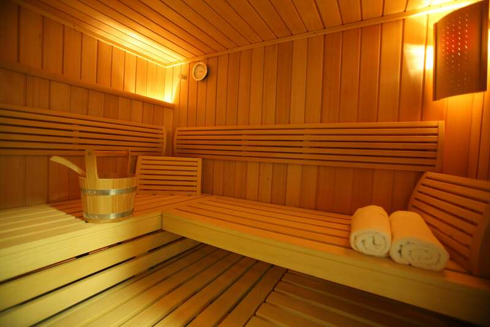

סאונה וג'קוזי
סאונה וג'קוזי יכולים לתרום לאורח חיים בריא בכך שהם מסייעים בהרפיית שרירים, שיפור זרימת הדם והפחתת מתח נפשי. השימוש בחום הסאונה מעודד ניקוי רעלים וחיזוק מערכת החיסון, בעוד הג'קוזי מרגיע את הגוף ומפחית מתחים.
סאונה וג'קוזי נחשבים לכלים מועילים באורח חיים בריא, שכן הם תורמים להרפיית השרירים, שיפור זרימת הדם והפחתת מתח נפשי. השהות בסאונה מעודדת את הגוף להזיע, דבר שמסייע לשחרר רעלים ולשפר את חילוף החומרים. בנוסף, החשיפה לחום בסאונה עשויה לתרום להפחתת כאבי שרירים ומפרקים ואף לתמוך במערכת החיסונית. מנגד, ג'קוזי מציע חוויית חימום שמכוונת יותר להרגעת הגוף – בועות המים והעיסוי שמתקבלים מסילוני הג'קוזי מעודדים הרפיה, מפחיתים את עומס השרירים ומסייעים בהפחתת מתחים מצטברים. השילוב של סאונה וג'קוזי כחלק מאורח חיים בריא יכול לשפר את תחושת הרווחה הכללית, לתרום לאיזון נפשי, ולהגביר את תחושת האנרגיה היומיומית.

סוכר
צריכת סוכר מופרזת עלולה להוביל לבעיות בריאותיות כמו השמנה, סוכרת, מחלות לב, פגיעה בשיניים, מצבי דלקת ושינויים במצב הרוח.

מזנות על
מזונות על הם מזונות עשירים בערכים תזונתיים כמו ויטמינים, מינרלים ונוגדי חמצון, שמסייעים בחיזוק מערכת החיסון, תפקוד הלב ושמירה על אנרגיה גבוהה. שילובם בתזונה כחלק מאורח חיים בריא מספק לגוף רכיבים טבעיים החיוניים לבריאות ולמניעת מחלות.